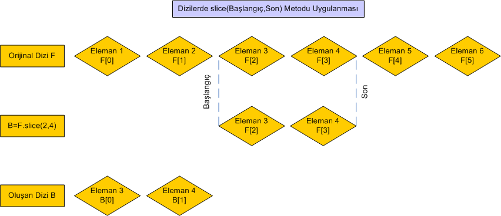
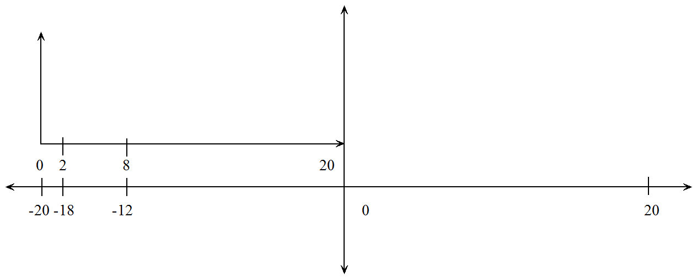
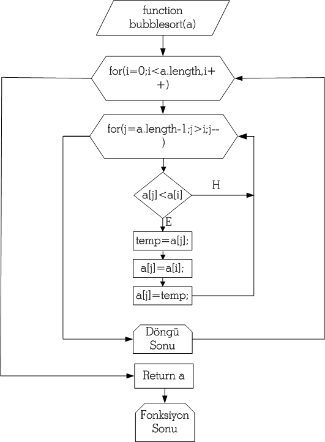

JavaScript Temelleri
Bölüm 8
Array (Dizi) Nesne Sınıfı
Bölüm 8 Sayfa 3
8.2.10- slice() Metodu
Dizilere uygulanan slice() (dilimleme) metodu, bir diziden birbirine bitişik belirli elemanları kopyalar. slice() (dilimleme) Metodu, dizileri değer olarak kopyalar. Orijinal dizi, kopyalama işleminden etkilenmez. Oluşan dizi orijinalden bağımsızdır ve kopyalanan dizide yapılacak değişiklikler orijinal diziyi etkilemez. Bu metot, sadece sayısal indisli elemanları gözönüne alır. Sözel indisli özellikler, slice() metodu ile kopyalanmaz. Bu nedenle, birr dizinin tam bağımsız yedeğini almak yani, bir diziyi tam olarak değerle kopyalamak için, slice() metodu kullanılamaz. Bunun için daha önce 8.2 bahsinde açıklanmış olan diziKopyala() programı kullanılmalıdır.
Bu metodun sözdizimi,
dizi.slice(başlangıç, [son]);
şeklindedir.
Burada,
dizi : Bir dizi (Dizi nesne sınıfının bir örneği) (Gerekli)
başlangıç : Kopyalamanın kendisinden sonra başlanacağı elemanın sıra numarası (dizinin ilk elemanın indisi sıfır olduğu düşünülerek) (Gerekli)
son : Kopyalamanın kendisinden önce tamamlanacağı elemanın sıra numarası (dizinin ilk elemanın indisi sıfır olduğu düşünülerek). (İsteğe Bağlı)
olarak belirlenmiştir.
Eğer slice() metodununda son eleman belirtilmemişse, kopyalama, belirtilen başlangıç değerinden başlayarak, dizinin sonuna kadar, tüm elemanları, kapsar.
Eğer, kopyalanacak başlangıç elemanına erişilemeden dizinin sonuna gelinirse, ikinci diziye hiç bir eleman kopyalanmaz.
Kopya dizi, başlangıç olarak belirtilen indisli eleman ile son olarak belirtilen indisli elemanlar hariç arada kalan tüm elemanları içerecektir.
Genel bir hatırlatma formülü :
dizi.slice(nB, [nS]);
nBKopya başlangıç noktası, kopyalanacak ilk eleman = dizi[nB] dir.
nSKopya son noktası, varsa kopyalanacak son eleman = dizi[nS-1] dir (nB , nS-1 kuralı), yoksa dizinin son sayısal indisli elemanına kadar kopyalanır.
Eğer ns belirtilmişse, sonuç :
Kopyalanan Dizi : |dizi[nB]...dizi[nS-1]|
olacaktır.
Dizilerin, bir kısmının slice()metodu ile kopyalanması için bir uygulamanın JavaScript kodları aşağıda görülmektedir:
/* <![CDATA[ */ // Bu Program bdelib-style.js Kitaplık Programından Yararlanmaktadır. function aralıkKopya() { var F = new Array('Element 1', 'Element 2', 'Element 3', 'Element 4', 'Element 5', 'Element 6'); var B = new Array(5); diziYaz(F, ' | ', ''b8.2.10-uyg-1-sonuç-1'); B = F.slice(2, 4); diziYaz(B, ' | ', 'b8.2.10-uyg-1-sonuç-2'); diziYazF(F,' | ','b8.2.10-uyg-1-sonuç-4'); } sayfaYüklendiktenSonraÇalıştır(aralıkKopya); /* ]]> */
Bu uygulamanın sonuçları aşağıda görülmektedir :
(Orijinal Dizi) F :
B = F.slice(2, 4);
(Oluşan Dizi) B :
B[1] = 99;
(Oluşan Dizinin Güncellenmesi) B :
(Kalan Dizi) F :
Oluşan Dizi, Orijinal F Dizisinin Kopyalanmış Elemanlarından Oluşuyor !
Orijinal Dizi, Kopyalama İşleminden Etkilenmiyor !
Oluşan Dizide Değişiklik , Orijinal Diziyi Etkilemiyor ! (Değerle Kopyalama)
Altın kuralı tekrar edelim:
Kopyalanacak Elemanlar : (Başlangıç İndisli eleman Dahil, [Son-1] İndisli Eleman dahil, Tüm Aradaki Elemanlar) (nB , nS-1 Kuralı)
Bu uygulamanın sonuçları, aşağıdaki şemaya bakılınca, daha iyi anlaşılabilir:

6 Elemanlı bir F dizisi, F.slice(2, 4) şeklinde kopyalandığında(F[2] dahil, F[4-1] yani F[3] dahil, tüm aradaki elemanlar diye okunabilir), kopyalanmış dizide, sadece 3 üncü ve 4 üncü elemanlar, F[2] ve F[3] bulunacaktır.
Bazı bildirimler, bir kalıp gibi, programcıların belleğinde yer almalıdır. Örnek olarak,
b = a.slice(0);
bildirimi, a dizisinin tüm sayısal indisli elemanlarını b dizisine kopyalayacaktır. Burada son kopyalanacak eleman nS belirtilmediğinden, kopyalama dizinin son elemanına kadar sürecektir. Kopyalamanın başlayacağı nB değeri, dizinin ilk elemanı olan a[0] elemanın belirttiği için, dizinin tüm sayısal indisli elemanları, b dizisine kopyalanacaktır. Kopyalama değerle gerçekleşeceğinden, b dizisine, a dizisinin tüm tüm sayısal indisli elemanlarının orijinal diziden bağımsız kopyaları yerleştirilecektir. Fakat b dizisine, a dizi nesnesi örneğinin hiçbir özel sözel indisli özelliği kopyalanmayacağından, bu kopyalama tam bir dizi yedeklemesi sayılmaz. Amaç dizi yedeklemesi ise, başka yöntemler kullanılmalıdır.
b = a.slice(1);
Bu bildirim, a dizisinin ilk elemanı dışında, tüm elemanlarını b dizisine yedekleyeyecektir. Bazı durumlarda, dizilerin ilk elemanına dizinin içeriğini tanıtıcı bir metin yerleştirilir. Bu bildirim ile, dizilerin homojen (türdeş) elemanları tanıtıcı elemandan ayrılarak, tüm elemanları türdeş olacak bir diziye yerleştirilmektedir.
b = a.slice(0, a.length - 1);
Bu bildirim, a dizisinin son elemanı dışında, tüm elemanlarını b dizisine yedekleyeyecektir. Bazı durumlarda, dizilerin son elemanına dizinin içeriğini tanıtıcı bir metin yerleştirilir. Bu bildirim ile, dizilerin homojen (türdeş) elemanları tanıtıcı elemandan ayrılarak, tüm elemanları türdeş olacak bir diziye yerleştirilmektedir.
slice() Metodunun uygulanmasında, kullanım kolaylığı açısından negatif indisler de kullanılabilir. JavaScript yorumlayıcısı, negatif bir indisi, dizinin dizi uzunluğuna eşit olarak negatif yöne kaymış olduğu varsayımı ile, negatif indise dizi uzunluğunu ekleyip normalleştirerek yorumlar. Eksen orijinin kayması, aşağıdaki şemadan daha kolay izlenebilecektir:

Bu şemada büyük eksenler, kartezyen eksenler olarak adlandırılan birbirine dik eksen sistemidir. Analitik geometride aynı eksen sisteminden yararlanılır. Burada incelediğimiz diziler tek boyutlu olduklarından skaler büyüklüklerdir ve sadece absis ekseni üzerinde yer alırlar, ordinat ekseni burda işlevsizdir. Dizi elemanları fiziksel büyüklüklerdir ve sadece kartezyen eksenin pozitif tarafında bulunurlar.
Dizinin orijini ile, kartezyen eksenin orijini çakışık oldukları sürece, dizi indisleri, kartezyen absislerle çakışık durumdadır. Dizi indisleri daima pozitif değerler alırlar ve indis değerleri, kartezyen eksende konumlarının bir ölçütüdür.
Bazı durumlarda ise bir algılama hatası belirir. Bu hata, dizi eksenin orijinini, kartezyen eksenin negatif bir noktasına kadar kaymış olarak algılatır. Aslında, gerçekte bir kayma yoktur. Gerçekleşen bir algılama hatasıdır. Bu hata her zaman aynı miktarda kayam algılattığı için, buna sistematik hata, kayma (bias) gibi adlar verilir. Sistematik hataları ölçme aletlerinin kalibrasyon eksikliği, algılama eksiklikleri, hesaplama kaymaları gibi nedenler ortaya çıkarabilir. Sistematik hata gerçek değil bir hesap kayması olduğundan, bu sistematik hataların düzeltilmesi, yani algılamanın normalleştirilmesi (normalizasyon) sistematik bir algoritmanın uygulanması ile gerçekleştirilebilir. Sistematik hata basit ise, düzeltim faktörü de basit bir algoritma olacaktır.
Burada, dizinin koordinat eksenin orijini, kartezyen koordinatlarının orijinine göre, eleman uzunluğu kadar negatif yöne kaymış olarak algılanmakta olduğu kabul edilir. Bu durumda, kartezyen absise göre xgerçek = 1 olması gereken değer, dizi uzunluğu kadar bir sağa kayma ile algılandığı varsayıldığından, xgörünen= xgerçek - eleman sayısı şeklinde algılanır. Bu sistematik hatanın normalizasyonu ise, algılama kaymasını giderecek xgerçek = xgörünen + sabit düzeltim terimi, burada, xgerçek = xgörünen + eleman sayısı, yani xgerçek = xgörünen + dizi.length ifadesidir.
Yukarıdaki şemaya bakıldığında, küçük eksen sistemi ile göterilmiş olan dizi koordinat sisteminde gerçek bir değişimin yaşanmadığı, elemanların dizi orijinine göre göreli pozisyonlarının aynı olduğu, yine tüm elemanların, dizi ekseninin pozitif tarafında yerleşik oldukları görülür. Sadece bir algılama kayması ile mutlak değerler kayma yapmaktadır, yoksa göreli değerler değişmeden kalmıştır. Algılama hatası giderildiğinde, yani değerler normalize edildiğinde eskisi gibi, dizi koordinat ekseni ile kartezyen koordinat ekseni çakışık hale gelecek ve gerçek ile görünen absis değerleri, yani dizi indisleri eskisi gibi birbirinin aynı olacaktır.
Aslında, bir koordinat ekseninde kayıklık görülürse, tüm element indisleri kayık olmalıdır. Fakat, ilgiç olarak, JavaScript yorumlayıcısı slice() metodunun argümanlarının her ikisinin de ayrı ayrı, ister gerçek ister kayık koordinatlarla ifade edilebilmesine olanak sağlamaktadır. Yine de dikkatli olunmalı, dizinin gerçek olarak küçükten büyüğe doğru yerleştirildiğini gözönüne almalı ve dilimleme aralığı gerçek koordinatlarla veya gerçek koordinat karşılıkları ile tutarlı olarak belirtilmelidir.
Negatif koordinatlarla çalışmak pek akıllıca sayılmaz, çünkü insanlar negatif koordinatları hesaplamak için,
xgörünen = xgerçek - dizi.length
hesaplamasını yaparken, bu koordinatları alan JavaScript yorumlayıcısının yaptığı ilk iş, bu koordinatları,
xgerçek = xgörünen + dizi.length
şeklinde normalize etmektir.
Aşağıda, negatif indislerin kullanıldığı bir dizi dilimleme örneğinin uygulama sonuçları ve JavaScript programı görülmektedir
/* <![CDATA[ */ // Bu Program bdelib-style.js Kitaplık Programından Yararlanmaktadır. function diziYenile() { var tk = new Array(20), tk[0] = -20; tk[1] = -19; tk[2] ='Cessna'; tk[3] = -17; tk[4] = -16; tk[5] = 'Beechcraft'; tk[6] = -14; tk[7] = 'Fokker'; tk[8] = -12; diziYaz(tk , ' | ' , 'b8.2.10-uyg-2-sonuç-1'); yedek= tk.slice(0);// tk Dizisi Yedekleniyor ! tk=tk.slice(-18, -12);// Rekürsif Kopyalama ! (20-18, 20-12) = (2, 8) orijinal tk dizisi kayboldu, ama yedeği var ! diziYaz(tk , ' | ' , 'b8.2.10-uyg-2-sonuç-2'); tk = yedek.slice(0);// Orijinal tk Dizisinin Yeniden Oluşturulması ! tk = tk.slice(2, 8);// Normaiize Koordinatların Sınanması ! diziYaz(tk , ' | ' , 'b8.2.10-uyg-2-sonuç-3'); } sayfaYüklendiktenSonraÇalıştır(diziYenile); /* ]]> */
Sonuç :
Orijinal tk Dizisi :
yedek = tk.slice(0); (Orijinal Dizi Yedekleniyor)
tk = tk.slice(-18, -12); (Rekürsif Kopyalama)
Güncellenmiş tk Dizisi :
Normalize Koordinatlarla :
tk = yedek.slice(0); (Orjinal tk Dizisi Yeniden Oluşturuluyor)
/* tk = tk.slice((-18 + tk.length), (-12 + tk.length)); (Koordinat Normalizasyonu
ile Rekürsif Kopyalama)
tk = tk.slice((-18 + 20), (-12 + 20)); (Eşdeğer İfade) */
tk = tk.slice(2, 8); // (Eşdeğer İfade)
Güncellenmiş tk Dizisi :
Negatif ve Normalize Koordinatlar Eşdeğerdir !
Bu kodların yorumlanması : Dizi 20 elemanlı olarak tanımlanmıştır. slice ()Metodunda, ilk elemanın indisi -18 olarak belirtilmiştir. JavaScript yorumlayıcısı, bu negatif indisi, -18 + 20 = +2 olarak normalleştirecektir. İkinci indis, -12 olarak verilmiştir, (negatif sayılarda -12, sıfıra daha yakın olduğundan, -18 den büyüktür), JavaScript yorumlayıcısı, bu negatif indisi de, -12 + 20 = +8 olarak normalleştirecektir. Bu durumda,
slice(-18, -12);
ifadesi,
slice(2, 8);
olarak yorumlanacaktır. Sonuçta, dizideki indisi 2 olan üçüncü eleman ('Cessna') dahil, indisi 7 olan sekizinci eleman ('Fokker') dahil, aradaki tüm elemanlar kopyalanacaktır. Negatif ve normalleştirilmiş indisler aynı sonucu vermektedir.
Yukarıda görülen programın bir özelliği, kopyalanan dizinin rekürsif olarak orijinal diziye atanmasıdır. Aslında kopyalama orijinal dizi içeriğini etkilemez. Bu durumda ise, kopyalanan dizi, yeniden orijinal diziye atanmış olduğundan bir tahrip edici atama gerçekleşmiş ve orijinal dizinin içeriği kaybolarak yerine kopyalanan dizinin içeriği geçmiştir
Negatif başlangıç ve bitiş noktalarının yararları olabilir. Aşağıdaki :
Ekip2 = Ekip1.slice(0 , -1);
kopyalama işlemi, Ekip1 dizisinin son elemanı hariç, tüm elemanlarını Ekip2 dizisine kopyalayacaktır. Bu işlemin açıklaması, kayma dengelemesinde yatar. Dizinin Başlangıç noktası ilk elemanın indisine eşittir. Bu değer 0 olduğundan, ilk eleman kopyalanacaktır. Son nokta -1 olarak belirtilmiştir. Kayma dengelenmesi için, bu değere, dizi uzunluğu +L eklenmesi ile, son nokta L-1 olur. Bu durumda, kopyalama bildirimi,
Ekip2 = Ekip1.slice(0, Ekip1.length -1);
haline gelir. [Ekip1.length - 1], Ekip1 dizisinin son elemanının indisidir. Kopyalama, Ekip1[0] elemanından başlayarak Ekip1[Ekip1.length-1] elemanı, yani dizinin son elemanından bir önceki elemanı dahil devam edecek, fakat dizinin son elemanı kopyalama dışında kalarak, Ekip2 dizisi elemanları içinde bulunmayacaktır. Başka bir dilimleme,
Ekip2 = Ekip1.slice( - 1);
ifadesi, Ekip1 dizisinin,
Ekip2 = Ekip1.slice(Ekip1.length - 1);
eşdeğer normalleştirilmiş koordinatla yapılan bildirimin belirttiği gibi, son elemanını ekip2 dizisine kopyalayacaktır.
8.2.11 - sort() (Sıralama) Metodu
sort() Metodu bir dizinin elemanlarını sıralama amaçlı bir metottur. Kullanımı,
dizi.sort(karşılaştırma fonksiyonu);
şeklindedir. Burada,
dizi : Tanımlı bir dizi.
karşılaştırmafonksiyonu : Kullanıcı tarafından yazılmış bir sıralama fonksiyonudur. Bu fonksiyonun,
geri döndürmesi gerekmektedir.
Kullanıcı tarafından yazılması gereken karşılaştırma fonksiyonu olmadığı veya karşılaştırma fonksiyonu spesifikasyona uymadığı durumlarda, işlemin sonucu spesifikasyonda belirtilmemiş ve JavaScript yorumlayıcılarını yazanların inisyatifine bırakılmıştır. Genel olarak,sort() metodu argümansız olarak kullanılırsa, sadece argümanlarının değeri sözel olan dizileri tutarlı olarak sıralayabilecekir. Çünkü, bu metot, eleman değerlerini önce, karakter dizgisi tipine çevirmekte ve sonra sıralamaktadır. Sayısal değerlerin karakter dizgisi olarak sıralanması yanlış sayısal sıralamaya neden olacaktır.
JavaScript yorumlayıcısının destekleklediği, kullanıcı tarafından yazılması gereken sıralama fonksiyonu için gereken yazılım açık ve basittir:
function sayısalSıralama(a, b) { return a - b; }
Bu fonksiyon tüm elemanları sayısal veya sayıya çevrilebilir nitelikte karakter dizgisi (string) olan dizlerde uygulanabilmekte ve kesin sonuçlar vermektedir.
Elemanları sayısal veya sözel olabilecek tüm dizilerde evrensel olarak kullanılabilecek sıralama yöntemleri için kullanıcıların geliştireceği programlar daha yararlı olabilecektir.
Sıralama programları, bilgisayar bilimlerinde çok çalışılmış ve çok iyi yöntemler geliştirilmiş olan bir konudur. Bu konuda en basit örneklerden birisi kabarcıklı Sıralama (Bubble Sort) algoritmasıdır.
Bir sıvıda oluşturulan kabarcıkların sıvı yüzeyine ulaşırken sıralanmaları davranışına analaog olarak bu metoda, Kabarcıklı Sıralama (Bubble Sort) adı verilmiştir. Kabarcıklı sıralama yönteminde, dizi eleman sayısı kadar taranmakta, her taramada değeri en küçük ( veya en büyük) olan eleman dizi başlangıcına doğru ötelenmektedir.
Kabarcıklı Sıralama yöntemi, sıralama algoritmalarının, yazılımı ve anlaşılması en basit, çalışması ise en yavaş olan bir örneğidir. Buna rağmen, günümüzdeki bilgisayar donanımındaki gelişmeler, çalışma yavaşlığını bir sorun olmaktan çıkarmıştır. Bu algoritma, bin veya daha az elemanlı bir diziyi ortalama bir bilgisayar konfigürasyonu ile donanmış masaüstü sistemlerinde, rahatlıla sıralayabilecek bir kapasitededir. Daha büyük diziler için, doğal olarak, php/MySQL gibi veri tabanları kullanımı gerekli olacaktır.
Kabarcıklı Sıralama yönteminın akım şeması aşağıda görülmektedir.

Kabarcıklı Sıralama Algoritmasının JavaScript programı kaynak kodları aşağıda görülmektedir:
function bubbleSort(a) { for(i = 0; i < a.length; i++) { for(j = a.length - 1; j > i; j--){ if(a[j] < a[i]) { temp = a[j]; a[j] = a[i]; a[i] = temp; } } } return a; }
Kabarcıklı sıralama algoritmasını kullanan bubbleSort() programı, hem sayısal hem de sözel elemanlı dizilerin sıralanması için, son derece kesin sonuçlar vermektedir.
JavaScript programlama dilinde, elemanlarının değerleri sözel olan dizilerin sıralanması, sort() metodu ile, elemanlarının değerleri sayısal olan dizilerin sıralanması, sort(sayısalSıralama) metodu ile yapılabilir. Burada açıklanan ve bdelib.js program kitaplığına konulmuş olan, bubbleSort(dizi) programı ise elamanları hem sayısal hem de sözel olan diziler için ortak olarak kullanılabilir. Bu konuda örnekler veren bir JavaScript programı, ve bağlı olarak çalıştığı bir uygulama sayfasında verdiği sonuç aşağıda görülmektedir.
var t = [32, 38, 8, 2, 16, 23, 78], p = ['Çamlıca', 'Acıbadem', 'Kozyatağı', 'Çengelköy', 'Beykoz']; diziYaz(t, ' , ', 'b8.2.11-uyg-1-sonuç-1'); diziYaz(p, ' , ', 'b8.2.11-uyg-1-sonuç-2'); diziYaz(p.sort(), ' , ', 'b8.2.11-uyg-1-sonuç-3'); diziYaz(t.sort(sayısalSıralama), ' , ', 'b8.2.11-uyg-1-sonuç-4'); diziYaz(bubbleSort(p),' , ', 'b8.2.11-uyg-1-sonuç-5'); diziYaz(bubbleSort(t),' , ', 'b8.2.11-uyg-1-sonuç-6'); ...
Bu programın uygulama sonucu:
Orijinal Dizi t :
Orijinal Dizi p :
p.sort(); ile Sıralama Sonunda Sıralanmış p Dizisi :
t.sort(sayısalSıralama); ile Sıralama Sonunda Sıralanmış t Dizisi :
bubbleSort(p); ile Sıralama Sonunda Sıralanmış p Dizisi :
bubbleSort(t); ile Sıralama Sonunda Sıralanmış t Dizisi :
JavaScript sort() metodu Sayısal Elemanlı Diziler İçin Çalışmaz !
Kodların Açıklaması:
Yukarıdaki programda, elamanları sayısal olan bit t dizisinin, istenirse, sort(sayısalSıralama) metodu ile, istenirse kullanıcı tanımlı bir sıralama metodu olan, bubbleSort[t] metodu ile etkin ve doğru olarak sıralanabileceği görülmektedir.
Yine yukarıdaki programda, tüm elemanlarının değeri sözel olan bit p dizisinin, istenirse, öntanımlı sort() metodu ile, istenirse kullanıcı tanımlı bir sıralama metodu olan, bubbleSort[p] metodu ile sıralanabileceği görülmektedir. Sıralama sonuçları, uygulanan metoda göre doğrudur. Burada sözel birimlerdeki tüm harfler sayısal eşdeğerlerine çevrilmekte, toplanmakta ve tek bir birimin sayısal eşdeğeri bulunmakta ve sayısal eşdeğeri en küçük olan sözel birim, dizinin başına getirilmektedir. Bu sıralama sonucu, sözcüklerin baş harflerine göre, yapılan sıralama sonuçlarından farklıdır. Bu tip bir sıralamayı gerçekleştirmek için, yeni kullanıcı tanımlı algoritmalar geliştirmek geekir. Bunu ileride gerçekleştireceğiz.
Dizilerin sıralanmasında kullanılan bubbleSort() algoritması çok basit ve çok yavaş bir algoritmadır. Sıralama için, insertion sort veya quick sort gibi daha etkin algoritmalar kullanılabilir.
Dizilerin sıralanması kararını verirken dikkatli olunmalıdır. Dizi elemanlarının sırası, önemli bir bilgi kaynağı olabilir. Örnek olarak bir sonraki konuda inceleyeceğimiz iki paralel dizinin ilkinde aynı şahsın ismini, öteki dizide ise ilkindeki ile aynı sırada olarak, adres bilgileri saklanmış olabilir. Bu dizilerin birisinin bilinçsiz olarak yeniden sıralanması, iki dizi arasındaki eleman sıralanmasından kaynaklanan bilgi ilişkisinin kaybolmasına neden olur. Genel olarak, dizilerin sıralanmasında dikkatli olmak gerekmektedir.
Eyman Huriye sayısalSıralama() fonksiyonun , nesne literallerinin sayısal değerlikli özelliklerine bağlanabileceğini göstermiştir. Bu çok yararlı teknik, aşağıda çok kısa olarak bir JavaScript programında açıklanmış ve bir uygulama sayfasında verdiği sonuçlar, aşağıda gösterilmiştir.
function nesneSıralama(a, b) { return a.nr - b.nr; } function genişletilmişSıralama() { var t = [{nr : 425, ad : 'Elif'}, {nr : 78, ad : 'Atalay'}]; t = t.sort(nesneSıralama); bilgiYaz(t[0].nr, 'b8.2.11-uyg-2-sonuç-1'); bilgiYaz(t[0].ad, 'b8.2.11-uyg-2-sonuç-2'); } sayfaYüklendiktenSonraÇalıştır(genişletilmişSıralama);
Bu programın uygulama sonucu:
Dizi Başlangıç Elemanı nr Özelliği :
Dizi Başlangıç Elemanı ad Özelliği :
Bu son uygulamanın sonuçları çok önemlidir. Programda, görüldüğü gibi, kendi veri yapımıza göre sıralama fonksiyonunda küçük bir değişiklik yapıyoruz. Bu küçük değişiklikle, sıralama fonksiyonu, veri yapılarını sayısal bir alana göre başarı ile sıralama yeteneği kazanmaktadır. Başka yöntemlerle, uzun ve karmaşık olabilecek bir sıralamanın bu şekilde basit olarak çözümlenebilmesi dikkat çekicidir. Veri yapıları, içinde birçok alan olan veri topluluklarıdır. Modern bilgisayar programcılığında veriler en çok veri yapıları halinde düzenlenmektedirler. Moden veri temelei programları da verileri veri yapıları halinde işlemektedirler. Bu programda gerçkleştirilen yöntemde daha ileride de programlarımızda yararlananacağız.